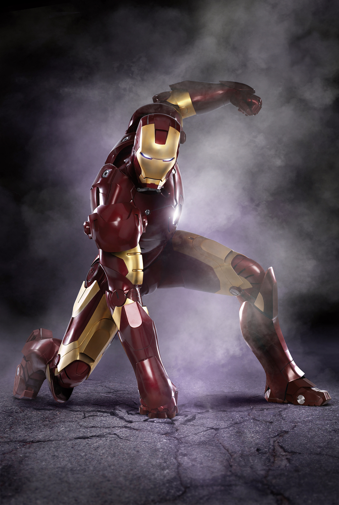

Ironman
Iron Man es uno de los personajes más reconocidos de Marvel Comics y del Universo Cinematográfico de Marvel. Su identidad secreta es Tony Stark, un genio inventor, empresario y filántropo que se convirtió en uno de los héroes más importantes de la historia del cómic moderno. Stark no solo es un industrial brillante, sino también una persona con un gran talento para la ciencia, la ingeniería y la innovación. Su vida cambia de forma radical cuando descubre que el poder y la tecnología pueden usarse tanto para proteger como para destruir, y decide tomar decisiones mucho más responsables.
La historia de Tony Stark comienza cuando es un hombre muy exitoso y extremadamente inteligente, dueño de una gran compañía dedicada a la fabricación de armas. Su fama y riqueza lo convierten en una figura influyente, aunque también muy arrogante y ambiciosa. Sin embargo, después de ser capturado durante una misión en el extranjero, Stark se enfrenta a una experiencia que lo hace replantearse por completo su visión del mundo. En cautiverio, debe construir un traje de alta tecnología para sobrevivir, escapar y, sobre todo, entender que su talento puede ser utilizado para algo mucho más grande que el dinero o la fama.
Gracias a su ingenio, Stark crea una armadura avanzada que le permite liberarse de su situación y regresar a su vida con una nueva misión. A partir de ese momento, el empresario se convierte en Iron Man, un superhéroe que utiliza su tecnología para defender a la humanidad. Su traje está equipado con sistemas de vuelo, sensores, energía, armas, escudos y una gran resistencia física, lo que le permite enfrentarse a amenazas de todo tipo. Además, la armadura es una extensión de su mente, ya que Tony la mejora constantemente con nuevas versiones y capacidades.
Una de las grandes cualidades de Iron Man es que no se limita a la fuerza bruta. Su verdadero poder radica en su inteligencia, su creatividad y su capacidad para resolver problemas bajo presión. Mientras otros héroes dependen de habilidades sobrehumanas, Tony Stark usa la estrategia, la innovación y la ingeniería para salvar a otros. Es un personaje que combina tecnología, liderazgo y valentía, por lo que se convierte en un gran símbolo del progreso y la responsabilidad.
Durante su desarrollo, Iron Man también se enfrenta a dilemas morales muy importantes. Su pasado como fabricante de armas lo hace reflexionar sobre el daño que la tecnología puede causar cuando se usa sin límites. A lo largo de los años, enfrenta sus propias decisiones, acepta sus errores y trabaja para corregirlos. Esa evolución lo convierte en un héroe más humano, preocupado no solo por vencer a sus enemigos, sino también por proteger a las personas y mejorar el mundo.
En los Vengadores, Iron Man juega un papel fundamental como estratega, impulsor y líder en momentos de crisis. Su capacidad para crear soluciones rápidas, su visión tecnológica y su presencia carismática lo convierten en un integrante esencial del equipo. Aunque a veces es impulsivo, egoísta o arrogante, también demuestra un enorme sentido de la justicia y una gran determinación para proteger a los demás. Por eso, Iron Man no solo es un personaje de acción, sino también de evolución personal, sacrificio y redención.

En resumen, Iron Man es mucho más que un hombre con un traje mecánico. Es un símbolo de inteligencia, innovación y responsabilidad. Tony Stark representa la idea de que el talento puede usarse para salvar vidas y que, incluso una persona con muchas fallas, puede elegir el camino correcto. Gracias a su carácter, su tecnología y su sacrificio, Iron Man se ha convertido en uno de los héroes más queridos y reconocidos de Marvel.